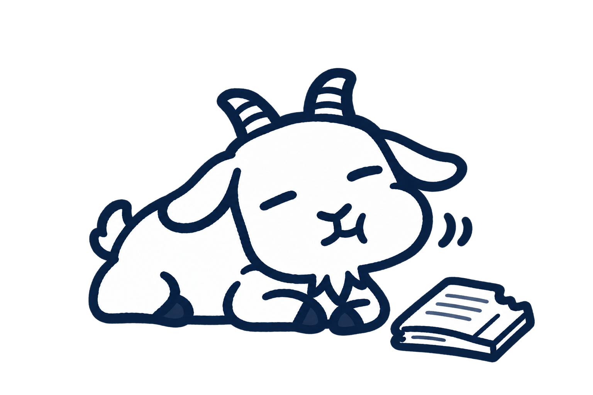

ruminy
飲み込んで終わりにしない。反芻する学習サイト
Google でログイン 学校の Google アカウントを使います
みんなの作品

まだ公開されていません。先生が公開するまで、のんびり待ちましょう。情報Ⅰ
コンピュータの仕組み / 01
CPUとメモリの役割
授業動画
- 動画で学ぶ見ながらノートの穴を埋める
- ノートで広げ、深める問いに自分の考えを書く
- 小テストで確かめる小テストへ
ノート

先生が用意したノートのひな形があります。読み込むと、穴を埋めたり、自由に書き換えたりできます。
保存しても、あとから続きを書けます